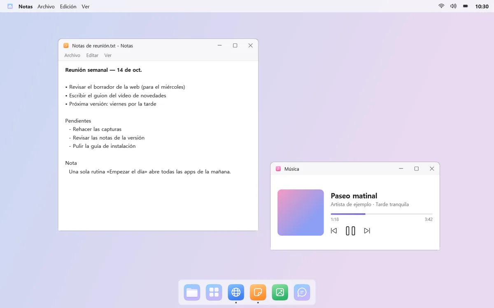
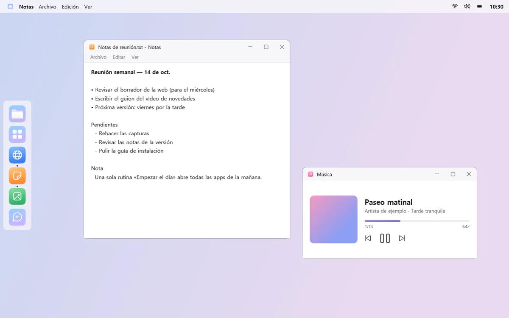
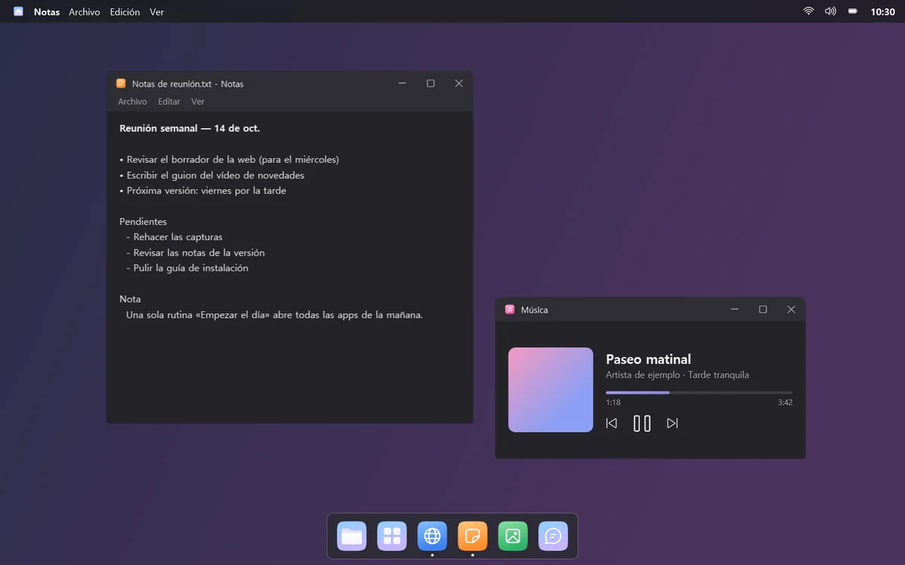
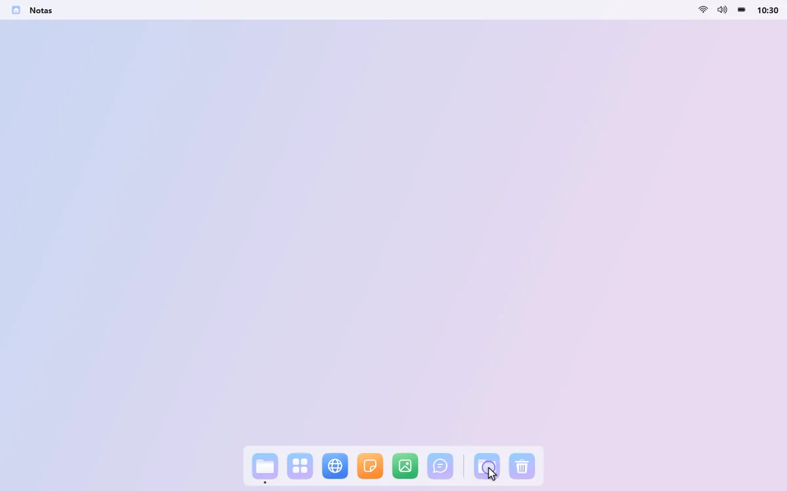
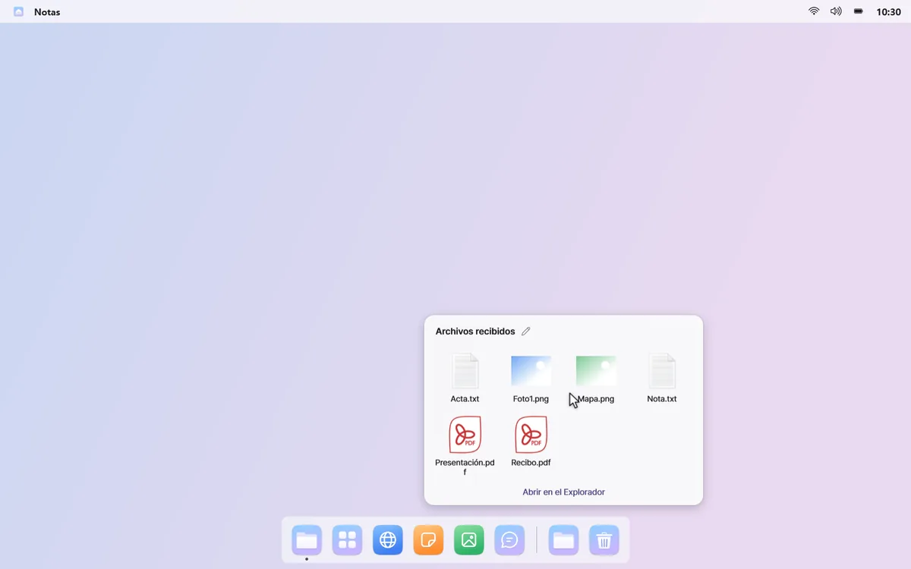
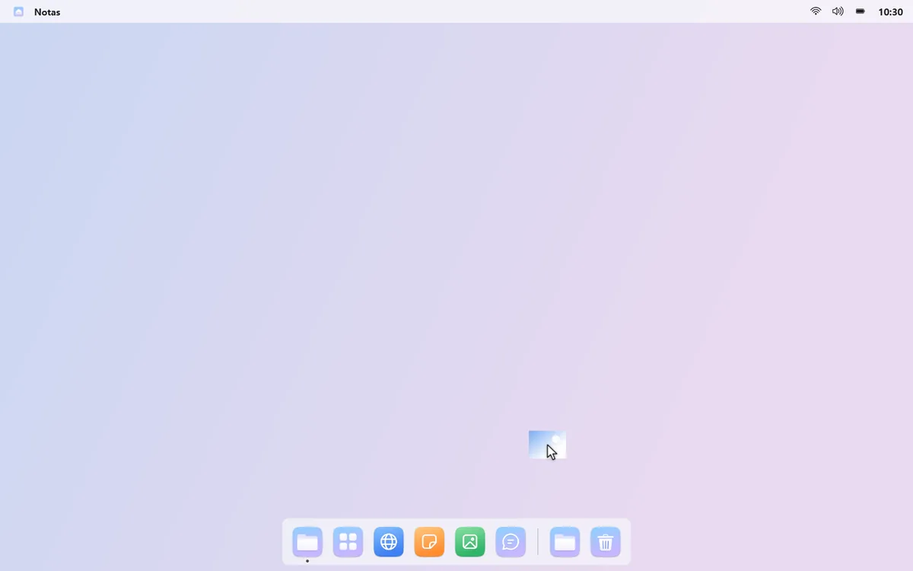
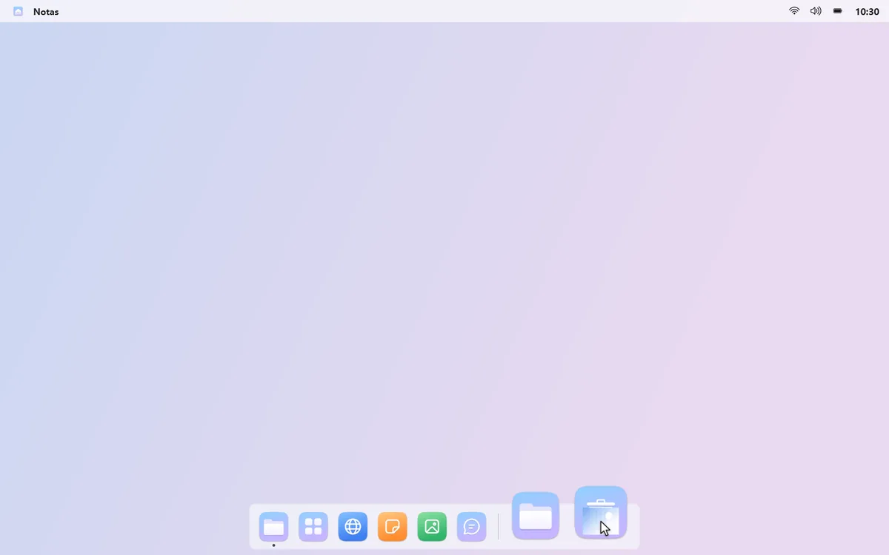
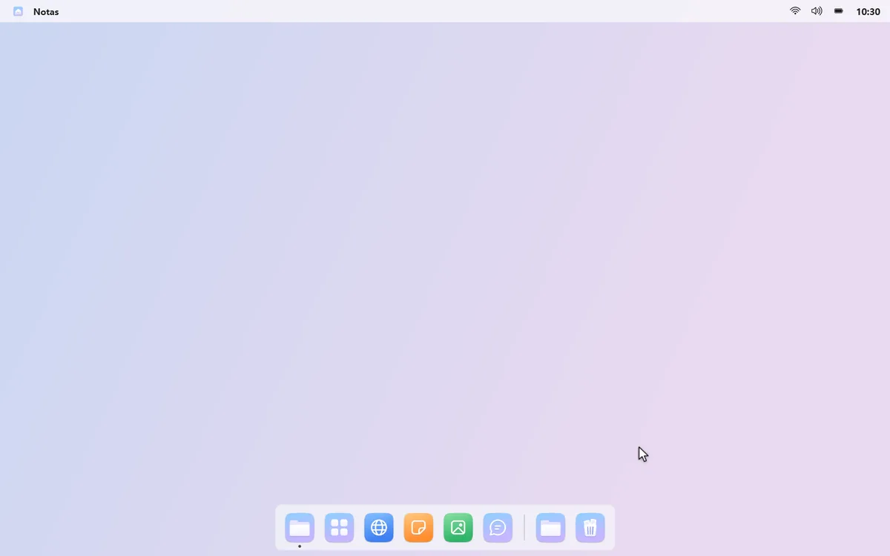

Una parte inferior más ligera y ordenada
Cambia la barra de tareas por un Dock que solo tiene tus apps, carpetas y la Papelera de reciclaje. No estorba hasta que llevas el puntero al borde.
Tu sitio, tu estilo
Pon el Dock abajo, a la izquierda, a la derecha o arriba. Arrastra los iconos para reordenarlos y elige tema claro u oscuro y cómo crecen los iconos al pasar el puntero.



Tus descargas, a un clic
Pon una carpeta en el Dock y haz clic en ella para ver sus archivos más recientes en cuadrícula. Aparece un pequeño punto cuando llega algo nuevo.



La Papelera, ahí mismo
Arrastra un archivo a la Papelera del Dock para tirarlo. Haz clic en la Papelera para ver lo último que has tirado y haz clic derecho para restaurarlo.


Elige ventanas con vistas previas en directo
Haz clic en una app con varias ventanas y elige la que quieras en las vistas previas en directo. Si está en otro escritorio, mongdock te lleva allí. También puedes mostrar en el Dock solo las apps del escritorio actual.